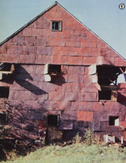
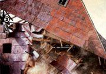
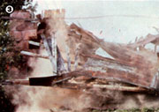
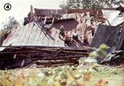
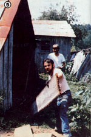
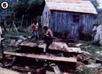
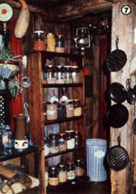

Cut people's taxes . . . beautify the land . . . recycle . . . and earn $500+ a week with . . .
Six years ago-quite by accident-my lady and I started a profitable home business in New England . . . an enterprise we still enjoy today. At the time, we found the beautiful barn-board interiors of some of our neighbors' houses so attractive that-when it was time to remodel our own kitchen's cracking plaster walls-we felt sure the warm coziness of weathered planks would provide a perfect background for our antiques and cast-iron pots and pans.
We soon discovered, however, that real barn board was impossible to buy at any price. (Some building supply companies offered simulated barn board and plastic beams, but such "forgeries" just weren't what we'd envisioned.)
So, fortunately (as it turned out), we were finally forced to tear down an old barn ourselves. And ever since that first experience, our company-Adventures in Time-has located decrepit old barns and sheds, and recycled their valuable aged boards and hand-hewn beams. The task is not only our business ... it's one of the joys in our lives!
It's not as difficult as you might think to track down the income-producing "derelict" buildings. First, ask everyone you know for suggestions .. . and then drive around rural areas and look for fallen or abandoned structures. (Sheds are easier to dismantle than barns but, obviously, yield less wood. And while barns generally produce the best antique lumber, don't overlook the weathered boards that can be found in old tenant houses, corrals, cattle chutes, fences, and windmills.)
Once you discover a structure that looks promising, locate the owner and inquire whether he or she would like you to tear down and haul away the hazard. (After all, you'll be performing a public service .. . not only by promoting recycling and beautifying the landscape, but also by eliminating a potential fire or accident "trap".)
When you negotiate for the right to tear a building down, remember to appear professional and not too anxious. Don't drool over the 28-inch-wide floor boards, or caress the open beams, or fondle the hand-forged iron latch and hinges. Just remind the owners that (as is the case in most states) they're probably paying taxes on the pile of rubble . . . ask them to visualize how much nicer their land will look when the eyesore is gone . . . and spell out clearly that you'll do the job free , in return for the wood.
By that time, most people will be begging you to "smash down that mess and haul the junk away". And, even if a few prospects refuse your services, be comforted by the knowledge that the countryside is filled with falling structures.
Also, don't forget to state specifically that you'll clean up any debris afterward. This part of your job should include raking the site clean and burning (check to see whether a burning permit is required) or hauling away all unsalvageable leftovers. Be sure to keep your promise on such cleanup operations, too, because a good word-of-mouth reputation will all but guarantee that you'll be invited to salvage more barns and sheds later on . . . and is a better and less expensive "business finder" than are newspaper ads.
Don't underestimate, however, the pulling power of low-cost classified blurbs in your local paper or "shopper". Our first such solicitation found us one of the free barns shown in the accompanying photos, and the "extras" that job brought were amazing: We were able to salvage kegs of cut nails and numerous pulleys, windows, granite blocks, bricks, etc. In fact, surprise bonuses-including fencing, wire, rare old bottles, and other antiques- often turn up in your "take"... as, of course, do ample supplies of free kindling and firewood.
Before you do any work, though, write out two copies of a contract (or informal agreement) giving you possession of "the barn and everything in it", so no misunderstandings occur later on. A country handshake may be enough in many areas, but a signed note provides better protection. (Most folks will also want to include in the contract a statement that you won't hold them responsible for any injuries that occur on their property.)
After the agreement is signed, you may go and lavish all the affection you like on "your" barn or shed.
In the good old days, country folks held barn-raising parties. Now, entrepreneurs who deal in barn wood often get groups of friends together and have demolition par ties. Basically-once you've rounded up your help-the work requires only hammers and wrecking bars. (We've discovered that a "pinch bar"-along wrecking bar with a U-shaped, claw-hammer end-is very efficient.) A chain saw is optional: Don't subject a valuable new saw to the abuse involved in tearing down buildings . . . but if you have an old used one, you'll find that you can slice right through ancient nails and beams, making many jobs quicker and easier.
For safety's sake, it's wise to wear sturdy overalls . . . heavy, steel-toed boots to protect your feet from nail punctures (be sure your tetanus shot is valid) ... and good work gloves to guard against splinters, cuts, and other injuries. On some jobs a hard hat is advisable, too. And-while working-you should always be on the lookout for wasps and other vermin.
When demolition time comes, each person will probably develop his or her own special approach. Often, a building will be in such a state of disrepair that a "huff and puff" will blow it down. For solidly standing structures, however, you might want to use a "reverse carpentry" technique, taking the edifice apart in an order opposite to that in which it was put up.
In such a case, you'll probably begin by removing all loose materials, taking out the windows, and dismantling floors and moldings. Next, tackle any interior walls ... the roof covering (which usually isn't worth saving) . .. and the horizontal roof boards. Then remove the roof "skeleton", piece by piece (leaving only the structural beams that hold the building together), and pry off the exterior walls. Once the ceiling headers are gone, the wall joists can be pushed out, and-finally-the subfloor demolished.
Frankly, we seldom go to that much trouble. We've found we can salvage almost the same amount of wood if we simply cut the main beams with a chain saw and push the structure over or-in the case of a large barn or shed- pull it down, using a cable or rope hooked to a tractor. The "quick and dirty" method not only saves a tremendous amount of time on the job, but also avoids the necessity of working in high places and on possibly rotted roofs. (It's better to suffer a few broken boards than a broken bone!)
If you use a little common sense, you won't have to worry about having the building collapse around you when the main beams are cut. Most old structures are pretty solidly built, and you'll find thateven with the main beams removed-they're not likely to fall down without a little "arguing". In fact, we think the cutand-collapse approach is the safest way to deal with dangerously big buildings.
With the whole structure down and its components all well within reach, it's time to be gentle with the worn, weathered wood. Lovingly extract each nail . . . reverently unpeg every joint . . . delicately lower each beam ... and stack everything neatly.
When you're finished-and the area is clean-borrow or rent a van, pickup, or trailer (assuming you don't have one of your own) to move the precious woodpile. (Or you might be able to get permission to sell the barn wood at the site, and let the buyers haul it away.)
Once you learn how to estimate the value of a salvage operation, you'll begin to realize what a treasure each structure can be . . . because the old, weathered wood sells for much more than new lumber. Ours goes (quickly!) for $2.00 to $4.00 per foot, with hand-hewn beams selling at $10 per foot and more! (On one barn alone, we made a profit of over $2,000, while keeping enough wood to finish off two kitchens, four big rooms, and a large hallway . . . and give us free fuel for two years!)
Generally speaking, the smaller the lot of wood being sold, the higher the price you can charge per foot . . . whereas on a big order you should offer a "wholesale" deal. Yet because time (when you could be out demolishing another old structure) is money, you'll usually clear more cash-and avoid the nuisance buyer who will search for hours for the "right" boards to build a bookcase-if you sell your wood in one or two big lots rather than in a dozen small ones.
In our experience, an average income (after all expenses) of $500 per work week
Is about the least you should expect. The prices you charge for your lumber (and the wages you pay your help) will, of course, vary . . . but most hard-working barn-board salvagers can make much more than that minimum amount.
When starting out, pay your workers (if they agree) in wood rather than cash. Then-as we first did-market your excess lumber after you've used the best for your own home. A small ad that offers "authentic barn board and hand-hewn beams" brings in all the customers we need. Or, if you store your product in an area of fairly high traffic, you won't even have to advertise . . . people will constantly be stopping to ask if you'd like to sell "that old lumber".
In addition to peddling the scavenged product, you can-if you have at least modest woodworking abilities-expand your business by installing the boards. You need no special carpentry skills to create beautiful rooms with this antique lumber, because the beauty of such paneling is in its simplicity, and fancy work isn't necessary.
As a matter of fact, many professional carpenters don't like to work with used lumber, as hidden nails can damage their expensive equipment. We, on the other hand, use old power tools or-more often, since the aged wood is very easy to cut and work with-hand tools that we've picked up at flea markets and yard sales . . . and you can do the same! (Generally speaking, a hammer, saw, marking gauge, and square are the only tools necessary for installing barn wood.)
You'll find some folks who assume that a room paneled with weathered boards will have-or will attract-bugs. But we know of many such rooms all around the country, and we've never heard of any unusual insect problem. Of course, common sense, in the form of giving your boards a careful inspection, should prevail. We check out every building for possible problems before we strike an agreement with the owner. Termites and other wood borers will leave little piles of sawdust to announce their presence (see "Where's Your Wood", on page 186 of MOTHER NO. 66, for information on how to spot such pests), and we simply won't deal with any structure that shows signs of insect infestation.
Usually, however, you'll find that the sun and wind have taken care of bug problems for you. Dry timber is safe against most forms of decay and deterioration, and even woodworms and fungi will rarely attack wood with a moisture content below 12%.
The main thing you have to watch out for is dry rot, a fungous decay that causes seasoned timber to become brittle and crumble to powder. This disease will usually be limited to boards that have come in contact with ground moisture, and such wood must be discarded. (A very conservative rule states that you should cut away an affected board at least 18 inches beyond any signs of decay.) Luckily, most old-time barn carpenters seem to have kept the dry rot problem in mind when they constructed their outbuildings.
We usually wire-brush our wood before using it . . . or wash it down with a garden hose at full pressure and then let it dry thoroughly in the sun. If your boards are unusually dirty-or if you want immaculate lumber-scrub with a wire brush as you wash.
And, though it's not really necessary, you can preserve and bring out the luster of the beautiful old boards with a half-and-half mixture of boiled linseed oil and turpentine. It will sink right into the wood and-we think-has a very pleasant smell. (Such a treatment is particularly attractive when the lumber has remnants of an old paint job still on it.)
The best way to acquire "decorating" skill is to practice on your own abode. Each room is different, of course, and every person will have his or her own preference . . . but we usually nail our boards up vertically. Horizontal and diagonal alignments can, however, also produce interesting effects.
When doing a big room, we generally try to cover the entire wall-and sometimes even the ceiling-with barn wood. However, in smaller areas the paneling usually looks better when it's run to only three or four feet above the floor . . . and finished off, perhaps, with a matching shelf. To make molding or edging from aged wood, rip the boards into three-inch-wide strips. (If the original wall should show through where two pieces don't quite butt up snugly, solve the problem by spraying a strip of flat black paint on the area where you'll join two sections of molding.) "Antiques" nails-or the ones you've salvaged-can be used to give a room a totally rustic look.
To complete your masterpiece, build shelves and hang up old baskets, tools, farm implements, Indian rugs, and dried herbs. Be as imaginative or as conventional as you like . . . you'll discover that practically any decorating scheme you choose will look lovely with barn wood!
Then, once you've got some "homework" under your belt, you can confidently set out to spruce up the interiors of other folks' houses . . . or of such commercial establishments as beauty salons, taverns, "western" sections of department stores, and other places that want an "antique" interior.
Since it's difficult to find carpenters willing to work with this old wood, you should have no problem getting any reasonable asking price for your labor. For example, a friend-using all hand tools-recently spent four days installing a barn-wood wainscot in a small kitchen. Aside from the $400 received for the wood itself, he charged $550 for his installation work . . . and the customer was well-pleased with the job and the price.
Of course, the aged lumber can be used for projects other than interior decoration, too. We've made signs, fireplace mantels, shelves, picture and mirror frames, and borders for stained glass windows. One young couple-who helped us salvage a collapsed shed-even produced an elegant home-on-wheels . . . by paneling the entire inside of a transcontinental bus.
And today (years after our first hesitant undertaking), our own original barn-board rooms-which require no maintenance-are doing fine . . . and we have an established recycling business that keeps on booming!
|
 [1] Some beautiful old timber hides under this huge barn's tattered weatherproofing. |
 [2] It's generally safer to first cut the main beams and then pull big structures down. |
 [3] It's certainly exciting to watch them fall! |
|
 [4] Once that wonderful wood is on the ground, it's easy to get to. |
 [5] The boards should be methodically stacked as you dismantle a building, so you can get an idea of what your work is worth. |
 [6] .Small sheds will yield less lumber, but are still well worth the effort. |
|
 [7] Additional money can be made by installing barn board... and most everything you do with it will look lovely. For example, here is a kitchen with rustic barn-board paneling. |
|
|